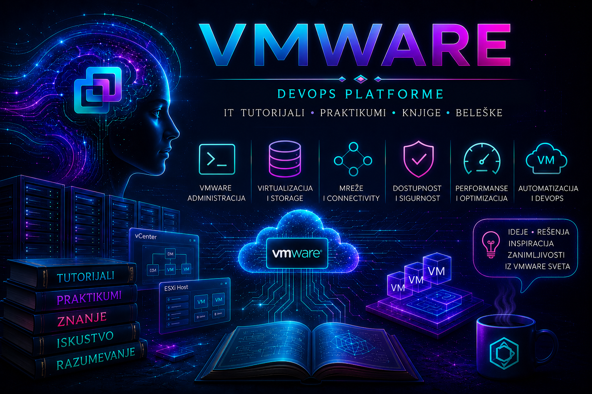

VMware

Savremeni informacioni sistemi oslanjaju se na veliki broj servera, aplikacija, baza podataka, mrežnih servisa i poslovnih platformi. Iza usluge koju korisnik doživljava kao jednostavnu veb-stranicu, poslovnu aplikaciju ili bazu podataka često se nalazi složena infrastruktura koju je potrebno pažljivo projektovati, organizovati, nadgledati, zaštititi, dokumentovati i održavati.
VMware je tokom razvoja enterprise računarstva postao jedna od najpoznatijih i najuticajnijih platformi za serversku virtuelizaciju. Njegove tehnologije godinama predstavljaju osnovu mnogih data centara, privatnih cloud okruženja, razvojnih i testnih sistema, poslovnih aplikacija, baza podataka i servisa čiji je stabilan i neprekidan rad od velikog značaja za organizaciju.
Poznavanje VMware infrastrukture zato nije važno samo administratorima virtuelizacije. Ono je korisno sistem administratorima, mrežnim inženjerima, stručnjacima za storage, backup i oporavak, bezbednosnim timovima, DevOps i platformskim inženjerima, cloud arhitektama, administratorima baza podataka i svima koji žele da razumeju kako funkcioniše moderna poslovna infrastruktura.
Da bismo razumeli značaj VMware platforme, najpre treba da razumemo problem koji je virtuelizacija pomogla da se reši. Pre njenog šireg uvođenja bilo je uobičajeno da jedan fizički server bude namenjen samo jednoj aplikaciji, jednom servisu ili jednom operativnom sistemu. Takav pristup bio je jednostavan za razumevanje, ali je često dovodio do slabe iskorišćenosti hardvera, visokih troškova i sve većeg broja fizičkih uređaja o kojima je trebalo voditi računa.
Svaki novi servis mogao je zahtevati kupovinu dodatnog servera, prostor u serverskoj sali, mrežne priključke, električnu energiju, hlađenje, rezervne komponente i vreme potrebno za instalaciju, konfiguraciju i održavanje. Kako je broj sistema rastao, rasli su i troškovi, složenost infrastrukture, broj tačaka mogućeg otkaza i rizik od administrativne greške.
Virtuelizacija je omogućila drugačiji način organizovanja resursa. Umesto da jedan fizički server bude vezan samo za jedan operativni sistem, njegovi procesorski, memorijski, diskovni i mrežni kapaciteti mogu se podeliti između više nezavisnih virtuelnih mašina. Svaka od njih ponaša se kao poseban računar: ima sopstveni operativni sistem, virtuelne procesore, memoriju, diskove, mrežne kartice, uređaje i sopstveni životni ciklus.
Na istom fizičkom serveru mogu istovremeno raditi različiti sistemi. Jedna virtuelna mašina može pokretati Linux aplikativni server, druga Windows servis, treća bazu podataka, a četvrta razvojno ili testno okruženje. Iako dele isti fizički hardver, virtuelne mašine ostaju logički odvojene i mogu se nezavisno pokretati, zaustavljati, menjati, premeštati, kopirati, nadgledati i oporavljati.
Virtuelizacija je time donela bolju iskorišćenost hardvera, brže uvođenje novih sistema, jednostavnije formiranje razvojnih i testnih okruženja, lakše premeštanje radnih opterećenja i mnogo fleksibilnije upravljanje infrastrukturom. Server više nije morao da bude samo fizički uređaj koji se danima nabavlja, montira i instalira. Mogao je postati softverski definisana celina kojom se upravlja kroz standardizovane, kontrolisane i automatizovane procese.
Upravo ta promena predstavlja osnovu ove knjige. Cilj nije samo naučiti kako se kreira virtuelna mašina, već razumeti kako se compute, mrežni, storage, bezbednosni i upravljački slojevi povezuju u infrastrukturu koja mora da bude dostupna, merljiva, dokumentovana, zaštićena i sposobna za oporavak.
Osnovni pojam u svetu virtuelizacije jeste hipervizor. Hipervizor upravlja fizičkim hardverom i omogućava istovremeni rad više virtuelnih mašina. On raspoređuje procesorsko vreme, memoriju, diskovne i mrežne resurse, vodi računa o izolaciji sistema i omogućava da svaki gostujući operativni sistem vidi sopstveni virtuelni hardver.
U VMware okruženju jednu od centralnih uloga ima ESXi. ESXi je specijalizovani hipervizor koji se instalira neposredno na fizički server. Takav server nazivamo ESXi hostom. Njegov glavni zadatak nije pokretanje klasičnih korisničkih aplikacija, već pružanje stabilne, kontrolisane i bezbedne osnove za izvršavanje virtuelnih mašina.
Jedan ESXi host može biti dovoljan za početni laboratorijski sistem ili manje okruženje. Na njemu je moguće kreirati virtuelne mašine, povezati ih sa mrežama, dodeliti im diskove i pratiti njihovo stanje. Međutim, ozbiljna enterprise infrastruktura uglavnom obuhvata više fizičkih hostova, zajedničke storage sisteme, različite mrežne segmente, klastere, pravila dostupnosti, centralizovane dozvole i alate za monitoring, automatizaciju i upravljanje životnim ciklusom.
Kada broj hostova i virtuelnih mašina poraste, upravljanje svakim ESXi hostom pojedinačno postaje nepraktično. Tada centralnu ulogu dobija vCenter Server. Preko njega administrator može da vidi i organizuje hostove, klastere, virtuelne mašine, mreže, datastore sisteme, alarme, zadatke, događaje, dozvole i podatke o performansama.
Centralizovano upravljanje ne predstavlja samo pregledniji interfejs. Ono omogućava primenu zajedničkih pravila, organizovanje resursa, kontrolu pristupa, automatizaciju, migracije virtuelnih mašina, rad klastera i korišćenje naprednih funkcionalnosti koje nisu dostupne kada se svaki host posmatra kao potpuno izdvojena celina.
VMware vSphere predstavlja širi skup tehnologija i funkcionalnosti namenjenih serverskoj virtuelizaciji. U praktičnom radu vSphere okruženje obuhvata ESXi hostove, vCenter Server, virtuelne mašine, mreže, datastore resurse, klastere, politike, dozvole, dostupnost, automatizaciju i alate pomoću kojih se svi ovi elementi povezuju u jedinstvenu infrastrukturnu platformu.
Kada kažemo da neko administrira VMware ili vSphere okruženje, to ne znači samo da ume da kreira virtuelnu mašinu. Od administratora se očekuje da razume odnose između fizičkih i virtuelnih resursa, da zna gde se podaci nalaze, kako mrežni saobraćaj prolazi kroz infrastrukturu, šta se događa kada host otkaže, kako se sistem vraća iz rezervne kopije i gde treba tražiti uzrok kada neka usluga ne radi očekivano.
Zbog toga VMware infrastrukturu treba posmatrati kao skup zavisnosti, a ne kao zbir pojedinačnih objekata. Virtuelna mašina zavisi od hosta, host od fizičkog hardvera i mreže, VMDK od datastore-a, mrežna komunikacija od virtuelnih i fizičkih svičeva, a klasterske funkcionalnosti od zajedničkih infrastrukturnih preduslova. Problem koji se vidi na jednom mestu može imati uzrok u potpuno drugom sloju.
Virtuelna mašina je osnovna radna jedinica VMware okruženja. Ona može predstavljati Linux ili Windows server, bazu podataka, aplikativni server, domen kontroler, veb-server, sistem za monitoring, razvojno okruženje ili gotovo bilo koji drugi sistem koji bi inače mogao da radi na fizičkom računaru.
Operativni sistem unutar virtuelne mašine naziva se gostujući operativni sistem. On vidi procesore, memoriju, diskove, mrežne adaptere i kontrolere kao da su stvarni uređaji. U pozadini hipervizor povezuje te virtuelne komponente sa fizičkim resursima hosta i upravlja njihovim korišćenjem.
Virtuelni hardver pruža veliku fleksibilnost. Administrator može promeniti količinu memorije, dodati virtuelni disk, povezati novu mrežnu karticu, promeniti kontroler ili prilagoditi broj virtuelnih procesora. Međutim, fleksibilnost ne znači da se resursi mogu dodeljivati bez planiranja. Prevelika dodela može biti jednako problematična kao i premala, jer virtuelne mašine međusobno dele stvarne procesorske, memorijske, mrežne i storage kapacitete hostova.
Zbog toga se konfiguracija virtuelne mašine ne procenjuje samo prema tome koliko resursa ona može da dobije, već prema tome koliko joj je stvarno potrebno, kakav workload izvršava, kako se ponaša tokom vršnog opterećenja i kakav uticaj njena konfiguracija ima na ostatak infrastrukture.
U većim okruženjima novi serveri se retko pripremaju potpuno ručno. Za to se koriste standardizovane slike, template mašine i automatizovani postupci. Template omogućava da se iz unapred pripremljene osnove kreiraju nove virtuelne mašine sa usklađenim operativnim sistemom, osnovnim bezbednosnim podešavanjima, potrebnim agentima i dogovorenom strukturom resursa.
Standardizacija pri tome nije samo pitanje brzine. Ona smanjuje konfiguracioni drift, olakšava održavanje, čini sisteme predvidljivijim i omogućava da se greška u početnoj konfiguraciji prepozna i ispravi na kontrolisan način, umesto da se ista neusaglašenost ponavlja na desetinama novih servera.
Mreža predstavlja jedan od najvažnijih slojeva VMware infrastrukture. Virtuelne mašine moraju da komuniciraju međusobno, da pristupaju drugim sistemima u data centru, da budu dostupne korisnicima i da se, kada je potrebno, bezbedno povežu sa spoljnim mrežama.
Virtuelni svičevi, Port Group objekti, VLAN segmenti, fizički uplink adapteri i VMkernel mreže zajedno formiraju putanju kojom se saobraćaj kreće kroz infrastrukturu. Zbog toga se mrežni problem ne sme posmatrati samo iz gostujućeg operativnog sistema. Greška može postojati u virtuelnoj mrežnoj kartici, Port Group konfiguraciji, VLAN oznaci, fizičkom adapteru, sviču, rutiranju, firewall pravilima ili nekom drugom sloju.
VMkernel mreže imaju dodatnu važnost zato što se preko njih mogu odvijati infrastrukturne funkcije kao što su management pristup, vMotion, storage saobraćaj i druge usluge hosta. Pogrešno projektovanje ili pogrešna konfiguracija ovih mreža zato može uticati ne samo na jednu virtuelnu mašinu, već na funkcionisanje celog hosta ili klastera.
Drugi veliki stub virtuelne infrastrukture jeste storage. Virtuelne mašine moraju negde čuvati svoje konfiguracije, operativne sisteme, aplikacije i poslovne podatke. U VMware okruženju prostor namenjen čuvanju fajlova virtuelnih mašina organizuje se kao datastore.
Datastore može koristiti lokalne diskove ESXi hosta ili zajedničke storage resurse dostupne preko NFS, iSCSI, Fibre Channel i drugih tehnologija. Izbor storage arhitekture utiče na performanse, dostupnost, cenu, backup, kapacitet, mogućnost migracije i korišćenje naprednih klasterskih funkcionalnosti.
VMDK predstavlja virtuelni disk virtuelne mašine. Gostujući operativni sistem ga vidi kao običan disk, dok se u VMware infrastrukturi nalazi na datastore-u kao deo skupa fajlova i struktura potrebnih za rad mašine. Poznavanje načina na koji funkcionišu VMDK diskovi važno je za proširivanje kapaciteta, snapshot operacije, backup, restore, migracije i troubleshooting.
Thin i thick provisioning omogućavaju različite načine dodele storage kapaciteta. Thin provisioning može poboljšati iskorišćenost prostora, ali zahteva pažljiv monitoring i planiranje, jer logički dodeljeni kapacitet može biti veći od fizički raspoloživog prostora. Bez kontrole rasta diskova i snapshot podataka može doći do kritičnog popunjavanja datastore-a i prekida rada virtuelnih mašina.
Storage problem takođe se ne završava na datastore objektu. Potrebno je razumeti putanju od virtuelnog diska preko hosta i storage adaptera do mrežne ili SAN infrastrukture i samog storage sistema. Kapacitet, latencija, broj i stanje putanja, multipathing, performanse uređaja i ponašanje aplikacije zajedno utiču na iskustvo koje korisnik na kraju vidi kao „brz“ ili „spor“ server.
Enterprise infrastruktura mora biti sposobna da izdrži planirane i neplanirane događaje. VMware zato pruža funkcionalnosti kao što su vMotion, High Availability i Distributed Resource Scheduler.
vMotion omogućava premeštanje aktivne virtuelne mašine sa jednog ESXi hosta na drugi uz minimalan ili korisniku neprimetan prekid rada. High Availability omogućava da se virtuelne mašine nakon otkaza hosta ponovo pokrenu na drugim raspoloživim hostovima. DRS analizira raspodelu resursa unutar klastera i pomaže da se radna opterećenja smeste tamo gde mogu dobiti odgovarajuće procesorske i memorijske kapacitete.
Nijedna od ovih funkcionalnosti ne može zameniti pravilno planiranje. Dostupnost zavisi od dovoljno slobodnih resursa, pravilno konfigurisanih mreža, pouzdanog storage-a, kompatibilnosti hostova, dobro definisanih pravila i redovnog testiranja. Funkcionalnost koja postoji u interfejsu nije sama po sebi dokaz da će sistem izdržati stvarni kvar.
Zbog toga treba razlikovati mobilnost workload-a, visoku dostupnost i disaster recovery. Mogućnost da se virtuelna mašina premesti između hostova nije isto što i oporavak nakon gubitka cele lokacije. Automatsko ponovno pokretanje nakon otkaza hosta nije isto što i zaštita podataka, a postojanje rezervne kopije nije isto što i dokazana sposobnost vraćanja poslovne usluge.
Performanse virtuelne mašine zavise od mnogo više faktora nego što se na prvi pogled vidi. Spor rad može biti posledica nedostatka procesorskih resursa, konkurencije za CPU, pritiska na memoriju, storage latencije, mrežnih problema, neodgovarajućeg virtuelnog hardvera ili problema unutar samog gostujućeg operativnog sistema.
Dobar administrator zato ne reaguje na problem samo povećavanjem broja virtuelnih procesora ili količine memorije. Najpre pokušava da utvrdi gde se zaista nalazi usko grlo, da li je problem trajan ili povremen, da li utiče na jednu virtuelnu mašinu ili više njih i da li se u isto vreme dogodila promena na hostu, datastore-u, mreži ili aplikaciji.
Monitoring je zato neophodan za zdravlje infrastrukture. Potrebno je pratiti procesore, memoriju, zauzeće datastore-a, diskovnu latenciju, mrežni saobraćaj, dostupnost hostova, stanje virtuelnih mašina, aktivne alarme, događaje i logove. Posebno su važni trendovi i istorijski podaci, jer se mnogi problemi javljaju samo u određenom delu dana ili pri pokretanju zahtevnih poslovnih procesa.
Alarm dobija pravu vrednost tek kada je povezan sa kontekstom. Nije dovoljno znati da je određeni prag prekoračen; potrebno je razumeti koji sistem je pogođen, koliko dugo stanje traje, da li utiče na korisnike, šta se neposredno pre toga promenilo i kakvu intervenciju treba preduzeti.
Backup virtuelnih mašina mora biti pažljivo planiran. Činjenica da je sistem virtuelan ne znači da je automatski zaštićen. Snapshot nije zamena za backup, a rezervna kopija koja nikada nije uspešno vraćena ne predstavlja pouzdan plan oporavka.
Snapshot je koristan alat za određene kratkotrajne operativne scenarije, ali njegovo nekontrolisano zadržavanje može povećavati zauzeće prostora, složenost diskovnih lanaca i operativni rizik. Zbog toga snapshot mora imati jasan razlog nastanka, poznatog vlasnika, očekivano trajanje i plan uklanjanja.
Profesionalna zaštita podataka zahteva jasno definisane procedure, odgovornosti, RPO i RTO ciljeve, odvojene kopije, proveru konzistentnosti i redovno testiranje restore postupaka. Organizacija mora znati koje sisteme vraća prve, koliko dugo oporavak traje, od kojih drugih servisa zavisi i kako se potvrđuje da je vraćeni sistem zaista funkcionalan.
Bezbednost VMware okruženja ima poseban značaj zato što jedna platforma može nositi veliki deo poslovne infrastrukture. Kompromitovan administratorski nalog, nezaštićen vCenter Server ili nepravilno dodeljene privilegije mogu ugroziti veliki broj virtuelnih mašina, aplikacija i podataka.
Bezbednost zato obuhvata zaštitu administratorskih i servisnih naloga, pravilno definisane uloge, princip najmanjih privilegija, segmentaciju management mreže, patching, sertifikate, kontrolu pristupa, praćenje aktivnosti i dokumentovanje promena.
U ozbiljnom okruženju potrebno je znati ne samo ko trenutno ima administratorska prava, već i zbog čega ih ima, kojim objektima može da pristupi, kada su privilegije promenjene i da li postoji trag iz kojeg se kasnije može rekonstruisati administrativna aktivnost. Identitet, autorizacija, audit i upravljanje promenama zato pripadaju istoj operativnoj celini.
Troubleshooting VMware infrastrukture zahteva smireno i sistematično razmišljanje. Kada korisnik kaže da „server ne radi“, uzrok može biti u aplikaciji, operativnom sistemu, virtuelnom disku, mrežnoj kartici, Port Group podešavanju, VLAN-u, datastore-u, snapshot-u, ESXi hostu, vCenter Serveru ili fizičkoj infrastrukturi.
Dobar administrator ne menja nasumično podešavanja. On utvrđuje tačan simptom, obim i vreme problema, proverava slojeve jedan po jedan, čuva dokaze, povezuje vreme događaja sa alarmima i logovima, procenjuje rizik svake intervencije i priprema način vraćanja na prethodno stanje.
Problem se ne smatra rešenim samo zato što je upozorenje nestalo ili se virtuelna mašina ponovo pokrenula. Potrebno je potvrditi da je usluga funkcionalna, da osnovni uzrok nije ostao prisutan, da promena nije proizvela novu posledicu i da postoji dokumentacija iz koje drugi administrator može razumeti šta se dogodilo.
Savremena VMware infrastruktura nije izdvojeno ostrvo. Ona se povezuje sa sistemima za upravljanje konfiguracionim podacima, bazama podataka, alatima za automatizaciju, monitoring platformama, backup sistemima, mrežnim i bezbednosnim servisima i DevOps procesima.
U velikim okruženjima nije dovoljno samo znati da virtuelna mašina postoji. Potrebno je znati kome pripada, koju poslovnu funkciju podržava, u kom okruženju radi, koliko resursa koristi, na kom hostu i datastore-u se nalazi, koje mreže koristi, kakvo je stanje VMware Tools-a, da li poseduje snapshot-e, koje tagove ima i ko je odgovoran za njeno održavanje.
VMware inventar, folderi, kategorije, tagovi, custom atributi i standardi imenovanja pomažu da se infrastruktura organizuje i poveže sa poslovnim značenjem. Kada takvi podaci ne postoje ili nisu uređeni, administrator mora biti sposoban da automatski prikupi što više tehničkih informacija iz samog vSphere okruženja.
Dobar inventar nije samo spisak objekata. On treba da omogući povezivanje tehničkog resursa sa vlasnikom, poslovnom uslugom, okruženjem, kritičnošću, životnim ciklusom i odgovornošću za održavanje. Bez tih veza veliki broj virtuelnih mašina lako postaje skup tehničkih objekata čija poslovna svrha više nije poznata.
U ovom materijalu zato ćemo obraditi i automatizovano prikupljanje podataka pomoću alata i tehnologija kao što su Ansible, PowerCLI, govc, API pristupi i skripte. Prikupljeni podaci mogu se pretvoriti u strukturisane izveštaje, dinamički inventar ili SQL i PL/SQL kod namenjen kreiranju i popunjavanju tabela u Oracle bazi.
Takva integracija omogućava da se tehnički podaci o virtuelnim mašinama koriste za tabelarne preglede, dopunu poslovnih informacija, kontrolu kvaliteta inventara, pronalaženje neusklađenosti i postepeno formiranje internog CMDB sistema.
Automatizacija pri tome ne znači samo brže izvršavanje ručnih zadataka. Njena vrednost je i u ponovljivosti, standardizaciji i mogućnosti da se promena unapred pregleda, evidentira i izvrši na isti način nad većim brojem objekata. Međutim, greška u automatizaciji može se isto tako brzo proširiti na veliki broj sistema, zbog čega validacija, ograničavanje obima i kontrolisan rollback ostaju neophodni.
VMware infrastruktura često predstavlja i osnovu na kojoj drugi timovi postavljaju Kubernetes platforme. Zbog toga VMware administrator mora razumeti šta je potrebno pripremiti pre nego što DevOps, platform ili OpenShift tim započne instalaciju.
Priprema za Tanzu, OpenShift i druge Kubernetes platforme obuhvata mnogo više od kreiranja virtuelnih mašina. Potrebno je uskladiti resurse, klastere, DRS i HA, mrežne segmente, VLAN-ove, MTU, DNS, NTP, storage klase, datastore politike, template slike, Content Library, sertifikate, firewall pravila, load balancer zahteve, servisne naloge, RBAC, API pristup, backup, monitoring i dokumentaciju za primopredaju.
Takva priprema zahteva saradnju više timova. VMware administrator, mrežni tim, storage tim, bezbednost, DNS administratori, backup tim i stručnjaci za Kubernetes platformu moraju imati zajedničko razumevanje preduslova, vlasništva i granica odgovornosti. Tehnički ispravno pripremljen resurs nije dovoljan ako nije jasno ko ga održava, ko odobrava promene i kako se reaguje kada dođe do problema.
Cilj nije da VMware administrator nužno preuzme posao Kubernetes stručnjaka, već da razume infrastrukturne preduslove, granice odgovornosti i podatke koje mora pouzdano pripremiti kako bi implementacija druge platforme bila moguća, bezbedna, proverljiva i dugoročno podrživa.
Knjiga je organizovana u četiri glavna dela i trinaest tematskih poglavlja. Sadrži 48 numerisanih lekcija, tri završna dodatka, uvodne celine i zaključak. Takva struktura prati prirodan razvoj znanja: od temelja virtuelizacije i pouzdanog rada sa virtuelnim mašinama, preko administracije zajedničke infrastrukture, do produkcionih operacija, automatizacije, otpornosti i provere naučenog u integrisanim praktičnim scenarijima.
Prvi deo – Temelji virtuelizacije i pouzdan rad sa virtuelnim mašinama obuhvata poglavlja od I do IV. U njemu upoznajemo osnovne pojmove virtuelizacije, VMware ekosistem, ESXi, vCenter Server, vSphere Client, hijerarhiju infrastrukturnih objekata i raspodelu resursa. Zatim prelazimo na virtuelne mašine, virtuelni hardver, VMware Tools, template mašine, kloniranje, power operacije, snapshot-e, migracije i prve sistematične postupke rešavanja problema.
Cilj prvog dela nije samo upoznavanje sa interfejsom, već izgradnja jasne mentalne slike: gde se virtuelna mašina nalazi, od kojih resursa zavisi, kako se kreira, kako se menja i kako se njeno stanje povezuje sa hostom, mrežom, storage-om i upravljačkim slojem.
Drugi deo – Napredna administracija zajedničke infrastrukture obuhvata poglavlja od V do VII. U njemu obrađujemo standardne i distribuirane virtuelne mreže, Port Group objekte, VLAN-ove, VMkernel servise i dijagnostiku povezivosti; zatim datastore resurse, VMDK diskove, thin i thick provisioning, NFS, iSCSI i Fibre Channel, kao i storage kapacitet, latenciju i putanje. Deo se završava klasterima, vMotion-om, vSphere HA i DRS funkcionalnostima, analizom performansi i bezbednosnom osnovom VMware okruženja.
U ovom delu tehnologije se više ne posmatraju kao izdvojeni objekti, već kao zavisni delovi zajedničkog sistema. Čitalac uči da mrežnu, storage i compute infrastrukturu analizira kao celinu, da razlikuje dostupnost od kontinuiteta rada i da metrike tumači u kontekstu stvarnog ponašanja workload-a, hostova i klastera.
Treći deo – Produkcione operacije, automatizacija i otpornost obuhvata poglavlja od VIII do XII. On povezuje zaštitu podataka, backup i restore, RPO i RTO ciljeve, monitoring, alarme, logove i sistematičan troubleshooting sa inventarom, tagovima, CMDB integracijama i pripremom vSphere infrastrukture za Tanzu, OpenShift i druge Kubernetes platforme.
U njemu se obrađuju i lifecycle upravljanje, identitet, SSO, RBAC, sertifikati, hardening, Secure Boot, TPM, enkripcija i audit, a zatim PowerCLI i vSphere API automatizacija, planiranje kapaciteta, Configuration Maximums i kontrolisano upravljanje promenama. Time se tehnička administracija povezuje sa pravilima, vlasništvom, dokumentacijom i procesom odobravanja promena.
Završna poglavlja trećeg dela posvećena su disaster recovery arhitekturi, replikaciji, orkestraciji i proveri oporavka, kao i upravljanju incidentima, prikupljanju support bundle podataka, analizi osnovnog uzroka i definisanju trajnih korektivnih mera.
Time se administracija VMware platforme sagledava kao kontrolisan operativni proces u kome su tehnička promena, dokaz, odgovornost, oporavak i učenje iz incidenta nerazdvojni. Cilj nije samo vratiti servis u rad, već razumeti zašto je do problema došlo i šta treba promeniti kako bi se smanjila verovatnoća njegovog ponavljanja.
Četvrti deo – Praktikumi, laboratorije i završni projekti obuhvata XIII poglavlje i tri dodatka. Prvi dodatak vodi kroz projektovanje, instalaciju i validaciju VMware laboratorijskog okruženja. Drugi razvija model bezbednog i upravljivog enterprise VMware okruženja, dok treći kroz operativnu validaciju i game day povezuje kontrolisano izazivanje kvara, oporavak, prikupljanje dokaza i retrospektivu.
Ovakav završetak knjige ne služi samo ponavljanju pojedinačnih termina. Njegov cilj je da proveri da li čitalac ume da poveže dizajn, implementaciju, svakodnevnu administraciju, bezbednost, automatizaciju, monitoring, troubleshooting, disaster recovery i dokumentovanje u jednu smislenu, proverljivu i operativno održivu celinu.
Zaključna lekcija zatim vraća pogled na VMware kao temelj za razumevanje enterprise virtuelizacije i moderne infrastrukture, ali i kao infrastrukturni sloj koji se sve češće povezuje sa cloud-native, DevOps i Kubernetes platformama.
Ovaj materijal namenjen je početnicima koji žele da upoznaju VMware virtuelizaciju, čak i ako još nemaju profesionalno iskustvo u administraciji servera. Pojmovi se uvode postepeno, uz objašnjenje njihove svrhe, međusobnih odnosa, infrastrukturnih zavisnosti i mesta u celokupnom informacionom sistemu.
Materijal je namenjen i ljudima koji razmatraju ulazak u IT sektor. Nije lako izabrati oblast profesionalnog razvoja samo na osnovu naziva zanimanja ili liste popularnih tehnologija. Potrebno je videti kakve probleme stručnjaci rešavaju, kako razmišljaju, koje dokaze koriste i sa kojim se odgovornostima susreću.
Nakon upoznavanja sa VMware okruženjem, čitalac može realnije proceniti da li ga privlače sistemska administracija, virtuelizacija, mreže, storage, monitoring, bezbednost, backup, disaster recovery, automatizacija, DevOps, cloud ili neka druga povezana oblast.
Materijal može biti koristan i ljudima koji već rade u IT sektoru, ali VMware poznaju samo iz jednog ugla. Sistem administrator može želeti jasniji pregled mrežnih i storage komponenti. Mrežni stručnjak može želeti da razume kako se fizička mreža povezuje sa virtuelnim svičevima i VMkernel servisima. Storage stručnjak može želeti jasniju sliku odnosa između datastore-a, VMDK diskova i workload-a.
DevOps ili platform inženjer može želeti da sagleda infrastrukturni sloj na kome se izvršavaju njegove platforme i aplikacije, dok administrator baze podataka može želeti da razume zbog čega performanse ili dostupnost virtuelne infrastrukture neposredno utiču na ponašanje sistema kojim upravlja.
Posebnu vrednost materijal može imati za administratore koji rade u neuređenim ili nedovoljno dokumentovanim okruženjima. U takvim sistemima često ne postoje pouzdani tagovi, kompletan CMDB, jasna vlasništva nad serverima, usklađeni standardi imenovanja ili ažurna dokumentacija.
Tada sposobnost prikupljanja, povezivanja, klasifikovanja, proveravanja i dopunjavanja podataka postaje jednako važna kao i samo upravljanje virtuelnim mašinama. Administrator mora umeti da od tehničkog inventara postepeno izgradi sliku sistema iz koje se mogu razumeti vlasništvo, zavisnosti, rizici i poslovni značaj pojedinačnih resursa.
Za mene je ovaj materijal istovremeno i uređena mapa oblasti koje smatram važnim. Umesto da informacije ostanu razbacane po zvaničnoj dokumentaciji, laboratorijskim beleškama, tehničkim izvorima i iskustvima iz različitih sistema, ovde su organizovane redosledom koji omogućava učenje, obnavljanje, povezivanje, proveru i dalje produbljivanje znanja.
Čitalac koji tek ulazi u ovu oblast trebalo bi da lekcije prati redom. Svaka nova tema oslanja se na pojmove obrađene ranije, pa preskakanje osnovnih odnosa lako pretvara administraciju u niz postupaka bez stvarnog razumevanja sistema.
Teško je pravilno razumeti vMotion bez poznavanja hostova, mreže i zajedničkog storage-a. Ne možemo ozbiljno govoriti o visokoj dostupnosti ako ne razumemo klaster, niti pouzdano rešavati problem sa virtuelnom mašinom ako ne znamo od kojih fizičkih i virtuelnih slojeva njen rad zavisi.
Nije potrebno zapamtiti svaki termin ili svaku putanju kroz vSphere Client pri prvom čitanju. Važnije je razumeti odnose: virtuelna mašina radi na hostu, host koristi fizičke resurse, virtuelni disk se nalazi na datastore-u, mrežna kartica povezuje se sa odgovarajućim Port Group objektom, a napredne funkcionalnosti zavise od pravilno pripremljene zajedničke infrastrukture.
Kada su ti odnosi jasni, promena interfejsa ili položaja određene opcije ne briše stečeno znanje. Administrator i dalje zna koji problem pokušava da reši, koji objekti učestvuju u postupku, koje zavisnosti treba proveriti i kojim signalima može dokazati rezultat.
Kada neki pojam postane nejasan, korisno je vratiti se na prethodne lekcije i ponovo sagledati celinu. Učenje infrastrukture nije pravolinijski proces. Često tek nakon susreta sa naprednijom temom potpuno razumemo zbog čega je neki osnovni pojam bio važan.
Svaku praktičnu vežbu treba izvoditi u kontrolisanom i bezbednom laboratorijskom okruženju. Pre promene potrebno je zabeležiti objekat nad kojim se radi, početno stanje, relevantnu konfiguraciju, cilj, pretpostavke i očekivani rezultat. Treba unapred odrediti način validacije i mogućnost povratka i tek tada izvršiti postupak.
Posle promene nije dovoljno utvrditi da se zadatak u interfejsu završio bez prijavljene greške. Potrebno je proveriti stvarno stanje virtuelne mašine, hosta, mreže, datastore-a ili klastera, pregledati relevantne događaje i alarme i potvrditi da servis koji zavisi od promenjenog resursa i dalje funkcioniše očekivano.
Korisno je voditi sopstvene beleške i repozitorijum skripti, izveštaja i konfiguracionih primera. Treba zapisivati nove termine, početno stanje, izvršene promene, vreme događaja, greške, alarme, logove, dokaze, pretpostavke i rezultat korekcije.
Beleške o neuspelim pokušajima često su vrednije od idealnog postupka bez konteksta. One pokazuju kako se infrastruktura ponaša kada pretpostavka nije bila tačna i pomažu da se sledeći incident analizira sistematičnije.
Dobar tehnički zapis treba da omogući da drugi administrator razume šta je urađeno, zbog čega je promena bila potrebna, kakvo je stanje postojalo pre nje, kojim dokazima je rezultat potvrđen i kako bi se postupak mogao ponoviti ili vratiti.
Dokumentacija koja može da izdrži pregled drugog člana tima vrednija je od postupka koji funkcioniše samo dok je prisutan administrator koji ga je osmislio.
Iskusniji čitaoci mogu koristiti knjigu kao mapu i referentni vodič. Mogu se neposredno vratiti na mreže, storage, snapshot-e, vMotion, HA, DRS, monitoring, bezbednost, tagove, CMDB integracije, automatizaciju, disaster recovery ili pripremu za Kubernetes platforme, a zatim pratiti veze sa drugim temama koje su potrebne za potpuno razumevanje problema.
Pri takvom načinu korišćenja korisno je zadržati vezu između simptoma i cele infrastrukturne putanje. Problem koji se vidi unutar virtuelne mašine može nastati u gostujućem operativnom sistemu, virtuelnom hardveru, hostu, mreži, storage-u ili fizičkoj infrastrukturi. Cilj nije samo pronaći opciju koja uklanja simptom, već razumeti uzrok i prikupiti dovoljno dokaza da se rezultat može pouzdano potvrditi.
Najvažnija ideja ove knjige jeste da VMware infrastruktura nije samo skup virtuelnih mašina prikazanih u vSphere Client-u. Pouzdano enterprise okruženje nastaje tek kada se povežu fizički serveri, hipervizori, procesorski i memorijski resursi, mreže, storage, virtuelne mašine, identiteti, dozvole, monitoring, backup, automatizacija, dokumentacija i ljudi koji infrastrukturom upravljaju.
Poznavanje pojedinačnog objekta zato nije dovoljno bez razumevanja njegovih zavisnosti. Virtuelna mašina zavisi od hosta i datastore-a; mrežna komunikacija od Port Group objekata, VLAN-ova, uplink adaptera i fizičke mreže; vMotion od odgovarajuće mreže i kompatibilnosti; HA od raspoloživog kapaciteta i ispravnog klastera; backup od mogućnosti restore-a; a disaster recovery od podataka, infrastrukture, redosleda oporavka i poslovnih prioriteta.
Isto važi i za administrativne procese. Inventar bez vlasništva ima ograničenu vrednost, alarm bez konteksta može proizvesti samo buku, backup bez testiranog restore-a ne dokazuje oporavljivost, a automatizacija bez kontrole obima može samo ubrzati širenje greške.
Zbog toga se kroz ovu knjigu stalno vraćamo istom obrascu: razumeti početno stanje, prepoznati zavisnosti, proceniti rizik, izvršiti kontrolisanu promenu, prikupiti dokaze, proveriti funkcionalnost i dokumentovati rezultat. To je važnije od pamćenja pojedinačnih koraka kroz grafički interfejs.
Od prve virtuelne mašine do završnih enterprise i game day scenarija zadržana je ista namera: infrastrukturu posmatrati kao sistem čiji se slojevi međusobno podržavaju i ograničavaju. Ako knjiga pomogne čitaocu da ne menja podešavanja naslepo, da sigurnije razlikuje simptom od uzroka, dokumentuje odluke, proverava oporavak i razume vezu između VMware infrastrukture i platformi koje se na njoj grade, onda je ispunila svoju svrhu.
Ovaj materijal predstavlja slobodan i sistematično organizovan obrazovni vodič kroz VMware virtuelizaciju, vSphere infrastrukturu i odgovorno upravljanje enterprise okruženjem. Namenjen je učenju, upoznavanju sa tehnologijom, povezivanju pojmova, laboratorijskom radu i razvoju praktičnog infrastrukturnog i administratorskog načina razmišljanja.
Materijal nije zvanična dokumentacija proizvođača, nije program ovlašćene profesionalne obuke i nije zamena za praktičan rad pod nadzorom iskusnih stručnjaka. Njegovo čitanje samo po sebi nije garancija polaganja određenog sertifikacionog ispita niti dovoljan osnov za samostalnu intervenciju u kritičnom produkcionom okruženju.
VMware proizvodi, funkcionalnosti, licence, podržane verzije, matrice kompatibilnosti, načini nabavke, programi obuke, interfejsi i preporučeni postupci mogu se menjati. Za profesionalnu primenu potrebno je proveravati aktuelnu zvaničnu dokumentaciju, tehničke vodiče, bezbednosne preporuke, matrice interoperabilnosti i procedure konkretne organizacije.
Primeri, konfiguracije, skripte, API pozivi i laboratorijske vežbe služe učenju. Pre primene bilo kog postupka u produkcionom okruženju potrebno je proceniti uticaj i rizik, potvrditi postojanje odgovarajućeg backup-a i mogućnost oporavka, razumeti infrastrukturne, mrežne, storage i aplikativne zavisnosti, obezbediti odgovarajuće odobrenje i pripremiti kontrolisan rollback.
Poseban oprez potreban je kod operacija koje menjaju mrežu, storage, privilegije, identitete, klaster, host konfiguraciju, virtuelne diskove, snapshot lance, sertifikate, enkripciju, automatizovane inventare ili podatke u eksternim bazama. Destruktivne ili teško reverzibilne promene treba prvo proveriti u kontrolisanom laboratorijskom okruženju.
Skripte koje generišu SQL ili PL/SQL kod, menjaju veliki broj VMware objekata ili šalju podatke u druge sisteme treba prvo izvršiti nad testnim podacima ili ograničenim skupom objekata. Potrebno je proveriti kako skripta bira ciljeve, koje podatke menja, kako prijavljuje greške i da li postoji način da se posledice pogrešne operacije vrate.
Za produkcionu primenu nije dovoljno da određena operacija tehnički može da se izvrši. Potrebno je znati ko je vlasnik sistema, ko odobrava promenu, kakav se uticaj očekuje, kojim signalima se prati stanje, gde se nalaze dokazi, kada se od promene odustaje i kako se sistem vraća u poznato i provereno stanje ako rezultat nije prihvatljiv.
Digitalna biblioteka TASHIZZA nastaje sa ciljem da složene stručne oblasti učini preglednim, sistematičnim i razumljivim bez pojednostavljivanja njihove suštine. Svaka knjiga predstavlja uređenu celinu koja povezuje teorijske osnove, praktične primere, laboratorijske vežbe, administrativne postupke i realne scenarije iz profesionalnog okruženja.
Cilj nije da se obuhvati svaka pojedinačna funkcionalnost određene tehnologije niti da se predstavi samo skup komandi ili koraka kroz grafički interfejs. Mnogo je važnije izgraditi stabilno razumevanje načina na koji sistemi funkcionišu, kako su međusobno povezani i zbog čega se određena rešenja primenjuju u stvarnim informacionim sistemima.
Poseban značaj pridaje se razumevanju celokupne infrastrukture. Serveri, operativni sistemi, mreže, storage sistemi, baze podataka, bezbednost, backup, monitoring, automatizacija, cloud platforme i DevOps alati posmatraju se kao međusobno povezani delovi jedinstvenog informacionog sistema, a ne kao izolovane tehnologije.
Pored tehničkog znanja, naglasak je stavljen na razvijanje infrastrukturnog načina razmišljanja. Svaka promena posmatra se kroz njene uzroke, posledice, zavisnosti, bezbednosne rizike, uticaj na druge sisteme i dugoročnu održivost. Takav pristup omogućava da se pojedinačne tehnologije povežu u jednu logičnu i funkcionalnu celinu.
Praktičan rad zauzima jednako važno mesto kao i teorija. Laboratorijska okruženja, praktični tutorijali, enterprise scenariji, mini projekti i završni integracioni projekti omogućavaju da stečeno znanje bude proverljivo, primenljivo i upotrebljivo u svakodnevnom radu.
Digitalna biblioteka nije zamišljena samo kao zbir pojedinačnih knjiga, već kao povezan sistem znanja. Oblasti poput Linux-a, VMware-a, Docker-a, Kubernetes-a, OpenShift-a, Oracle-a, automatizacije, programiranja, veštačke inteligencije i drugih tehnologija međusobno se dopunjuju i zajedno grade širu sliku savremene IT infrastrukture.
Posebna pažnja posvećena je sistematičnosti, jasnoći i dugoročnoj upotrebljivosti sadržaja. Svaka knjiga organizovana je tako da čitalac može postepeno napredovati od osnovnih pojmova, preko administracije i automatizacije, do realnih enterprise scenarija, bez potrebe da prethodno poseduje veliko praktično iskustvo.
Krajnji cilj digitalne biblioteke TASHIZZA jeste da predstavlja pouzdan, pregledan i dugoročno održiv izvor znanja koji pomaže razumevanju tehnologije, razvijanju profesionalnog naččina razmišljanja i sigurnijem snalaženju u savremenim informacionim sistemima.
Ovaj tutorijal deo je slobodne digitalne biblioteke TASHIZZA. Osim kada je uz pojedinačni materijal izričito navedeno drugačije, autorski tekstovi, objašnjenja, knjige, tutorijali, praktikumi, beleške, originalne ilustracije, slike i drugi obrazovni sadržaji za koje je autorka nosilac odgovarajućih prava objavljeni su pod licencom Creative Commons Attribution 4.0 International – CC BY 4.0.
Licenca CC BY 4.0 omogućava čitanje, preuzimanje, kopiranje, deljenje, prevođenje, prilagođavanje, dopunjavanje i dalje objavljivanje sadržaja, uključujući njegovu komercijalnu upotrebu. Prilikom takvog korišćenja potrebno je na odgovarajući način navesti autorku i izvor, postaviti vezu ka licenci i jasno označiti da li je izvorni materijal menjan. Navođenje izvora ne sme stvarati utisak da autorka podržava novu verziju, njenog izdavača ili način na koji je sadržaj upotrebljen.
Kao osnovni podatak o izvornom delu navodi se: Nataša Mihajlović, TASHIZZA, https://tashizza.com. Puni uslovi licence dostupni su na stranici Creative Commons Attribution 4.0 International i u pratećem dokumentu LICENSE.
Osim kada je izričito navedeno drugačije, originalni primeri programskog i skriptnog koda, HTML struktura i šabloni, CSS, JavaScript, Bash skripte, PowerShell i PowerCLI skripte, SQL i PL/SQL primeri i drugi tehnički kod za koji je autorka nosilac odgovarajućih prava objavljeni su pod MIT licencom. MIT licenca dozvoljava korišćenje, kopiranje, menjanje, povezivanje, objavljivanje, distribuciju, podlicenciranje i prodaju kopija koda, pod uslovom da se u kopijama ili značajnim delovima koda sačuvaju obaveštenje o autorskim pravima i tekst MIT licence. Autorski i obrazovni tekst unutar HTML dokumenata ostaje obuhvaćen licencom CC BY 4.0.
Slobodno korišćenje sadržaja ne znači da su nazivi proizvoda, zaštitni znakovi, logotipi i tehnologije pomenuti u tutorijalu vlasništvo autorke ili sajta TASHIZZA. Nazivi VMware proizvoda, vSphere, ESXi, vCenter Server, Tanzu, OpenShift, Kubernetes, Oracle i drugih pomenutih proizvoda, projekata i tehnologija pripadaju njihovim odgovarajućim nosiocima prava. U ovom tutorijalu koriste se isključivo radi identifikacije, stručnog objašnjenja, obrazovanja i informisanja i ne podrazumevaju povezanost, sponzorstvo, odobrenje ili podršku njihovih vlasnika.
Licence TASHIZZA primenjuju se samo na originalne materijale za koje je Nataša Mihajlović nosilac odgovarajućih prava. One ne menjaju uslove koji važe za citate, fotografije, ilustracije, zaštitne znakove, delove dokumentacije, delove koda i druge sadržaje trećih lica. Takvi materijali koriste se i dalje prenose u skladu sa pravima, licencama i pravilima njihovih odgovarajućih izvora.
Cilj otvorenog pristupa jeste da uređeno znanje ne ostane zatvoreno u ličnim beleškama. Čitalac je slobodan da uči, vraća se lekcijama, koristi ih kao osnovu za sopstveno istraživanje, razvija nove verzije i doprinosi daljem širenju znanja, uz poštovanje jednostavnih i jasno navedenih uslova odgovarajuće licence.